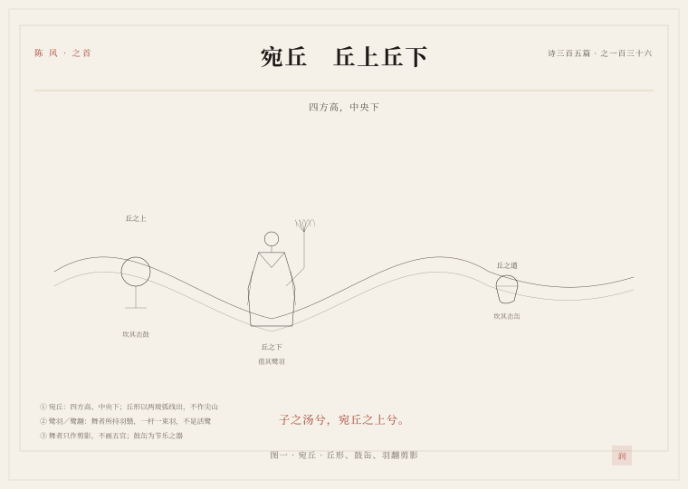
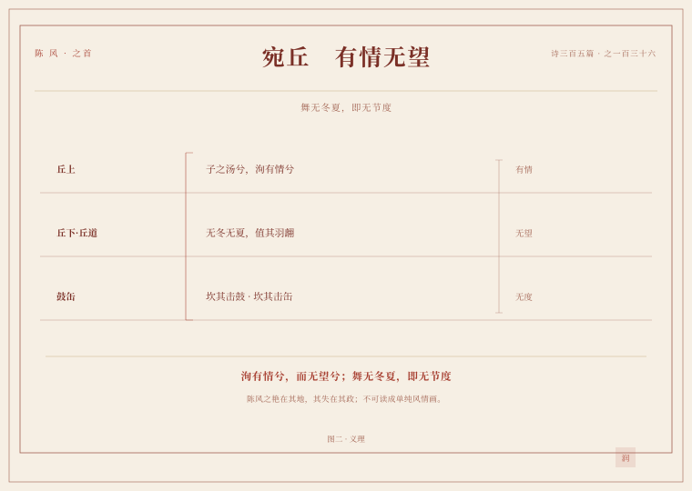

第一百三十六篇 宛丘
陈风 · 之首 SJ136
朗读 · 普通话
依经文原文朗读，章次不读出；配古琴底乐，不改速、不加拖腔。全库同一音色（豆包 TTS），非播音员录制。
一 解题
诗三判：
- 谁在说：陈国国人。见游荡之人常舞于宛丘之上、之下、之道，击鼓击缶，无冬无夏，持鹭羽鹭翿而舞；虽有情思可乐，而无威仪可瞻望。
- 说什么事：三章由丘上而丘下而丘道，地形三易；鼓、缶二节，羽、翿二翳，四时不歇。舞无节度，游荡无度。
- 为何编在此：陈风十篇以此为首。陈地大姬好巫觋歌舞，其民化之；开卷即「歌舞之国」气象，而其失在政不在地——先立此篇，后九篇男女会遇、风月相思皆从此风出。
《毛序》：“《宛丘》，刺幽公也。淫荒昏乱，游荡无度焉。”
朱子《诗集传》：“赋也。子，指游荡之人也。汤，荡也。四方高中央下曰宛丘。洵，信也。望，人所瞻望也。国人见此人常游荡于宛丘之上，故叙其事以刺之。言虽信有情思而可乐矣，然无威仪可瞻望也。”二章：“赋也。坎，击鼓声。值，植也。鹭，春鉏，今鹭鸶。羽，以其羽为翳，舞者持以指麾也。”三章：“赋也。缶，瓦器，可以节乐。翿，翳也。”
本库的看法：《宛丘》是一首把「游荡无度」写成四时不休之舞的诗。
毛序坐实刺幽公；朱子只指「游荡之人」，以无威仪为刺。本库从朱读辞面，以陈幽公之世为背景。须辨：陈风之艳在其地好巫风，其失在君上昏乱、弃业无度；不可把此篇读成单纯风情画，也不可把舞者当成可瞻仰的正舞。
断语：洵有情兮，而无望兮；舞无冬夏，即无节度。
先辨五事：「汤」读荡，是游荡，不是汤水；「宛丘」是四方高中央下之地形，不是人名；「值」是植、持，不是价值；「鹭羽」「鹭翿」是舞者所持羽翳，不是真鹭鸟；「望」是威仪可瞻望，不是盼望。
二 经文
第一章
子之汤兮，宛丘之上兮。
洵有情兮，而无望兮。
第二章
坎其击鼓，宛丘之下。
无冬无夏，值其鹭羽。
第三章
坎其击缶，宛丘之道。
无冬无夏，值其鹭翿。
分章：三章，章四句。
三 韵读
- 一章：汤、上、望，阳部；「望」收，威仪既失。
- 二章：下、羽，鱼部；「夏」不入韵。
- 三章：道、翿，幽部；「夏」不入韵。
读法：三章地形由上而下而道，节乐由鼓而缶，羽翳由羽而翿；「无冬无夏」两章重出，是「无度」之骨。
四 字义与名物
- 子：指游荡之人。毛传或以为所刺大夫，朱子泛指游荡之人；本库从朱说，诗辞不坐姓名，毛序刺幽公只作时代背景，大夫旧说存参。汤：荡，游荡。宛丘：四方高、中央下之地。
- 洵：信、诚。情：情思可乐。望：人所瞻望之威仪。
- 坎：击鼓声。鼓：击鼓节乐。缶：瓦器，可以节乐。
- 值：植、持，舞者执持。鹭羽：以鹭鸶白羽为翳，舞者持以指麾。鹭翿：翳也，聚羽而成的舞幢，与羽同类而形稍大。
- 名物：鹭，春鉏，今鹭鸶，白羽，头上有长毛十数枚；羽翿取其羽为之，是舞具，不是活鸟。
五 今译
这人游荡啊，在宛丘丘顶。诚然有情思可乐啊，却没有威仪可瞻望。
咚咚击起鼓来，在宛丘坡下。不分冬夏，持着鹭羽起舞。
咚咚击起缶来，在宛丘道上。不分冬夏，持着鹭翿起舞。
六 章旨
- 一章：写「丘上」与「无望」。人在丘顶游荡，有情而无威仪。
- 二章：写「丘下」与「鹭羽」。击鼓持羽，四时不歇。
- 三章：写「丘道」与「鹭翿」。击缶持翿，舞遍道路。
- 总收：上、下、道三易其地，鼓、缶、羽、翿三易其具；无冬无夏，是为游荡无度。
七 诗教
- 兴：此篇赋也，直陈其地其事；以地形三易见游荡之广，以四时不歇见无度之实。
- 观：观「有情」与「无望」相形。情思可乐是一面，威仪尽失是一面；两面并陈，刺意自见。
- 群：舞者与国人相对；一在丘上丘下丘道自舞，一在旁瞻望而无仪可指。
- 怨：怨在「无度」；不指骂其人，所怨是君上昏乱、风化日弛。
八 分寸与边界
- 不可把此篇读成单纯风情画。辞面是舞，所刺是游荡无度；一读风情，「无望」之刺就成赞美。
- 不可把「汤」当汤水。汤读荡，游荡也；一读汤水，全章不可解。
- 不可把舞者画成有五官的正舞容。图中只作剪影；一画面容威仪，「无望」就被坐实成有望。
- 不可把鹭羽、鹭翿画成活鹭。它们是舞具羽翳；一画活鸟，舞具就成禽鸟图。
- 不可把「望」当盼望。望是威仪可瞻望；一读盼望，诗意就成思慕。
- 不可把毛序「刺幽公」当诗中直说。诗辞只指游荡之人；一坐实幽公，赋事就成弹劾。
九 存疑
- 诗旨：毛序刺幽公淫荒昏乱；朱子指游荡之人，不坐其君。本库从朱读辞面，幽公为背景。
- 「子」指谁：毛传或以为大夫，朱子以为游荡之人；旧说不一。
- 宛丘地形：毛传「四方高，中央下」；《尔雅》郭璞注以为中央隆峻之丘；二说相反，诗人之意不可强断。
- 羽与翿之别：翿训翳，与羽同类；二者形制大小之别，旧说不详。
- 作者：是国人直陈，还是巫祝之流代述；诗中无身份可指。
- 编次：陈风以歌舞开篇，是编者因风归类，还是时序先后；不可考。
十 跨典
- 《左传·隐公五年》：“夫舞，所以节八音而行八风。”——舞之正轨在节；此诗之舞无冬无夏、失其节度，正与「节」相反。
- 《论语·乡党》：“衣前后，襜如也。”——威仪之可观；「而无望兮」即无此可观之威仪。
- 《礼记·乐记》：“凡音之起，由人心生也……乐者，天地之和也。”——乐舞有本；荒舞无度，非和乐之正。
- 《诗经·陈风·东门之枌》（SJ137）：“婆娑其下。”——同陈风歌舞之俗；前篇刺游荡无度，后篇写市井聚会，风气流贯。
十一 双卡与图
六对：
| 汤（游荡） |
汤（汤水） |
| 宛丘（四方高中央下） |
宛丘（人名） |
| 值（持、植） |
值（价值） |
| 鹭羽／鹭翿（舞具羽翳） |
鹭羽／鹭翿（活鹭） |
| 望（威仪瞻望） |
望（盼望） |
| 无望（无威仪） |
无望（无指望） |

图一 · 宛丘 丘形、鼓缶、羽翿剪影

图二 · 宛丘 有情无望、无冬无夏
读图三处：
- 丘形：图一以线出坡面，四周高、中央下，丘顶、坡下、丘道三位置；丘是地形，画成尖山即错形。
- 舞者剪影：只画侧身轮廓与执羽之臂，不画五官；羽翳在手中，不画成鸟。
- 三易其地：图二三行「上／下／道」，贯以「无冬无夏」；时令两字只作对照，不画成冬夏景物。